O balão de ar quente é a maior e mais poderosa ferramenta de impacto visual que existe.
A AirXtreme te disponibiliza a estratégia de marketing que literalmente leva sua marca para as alturas!
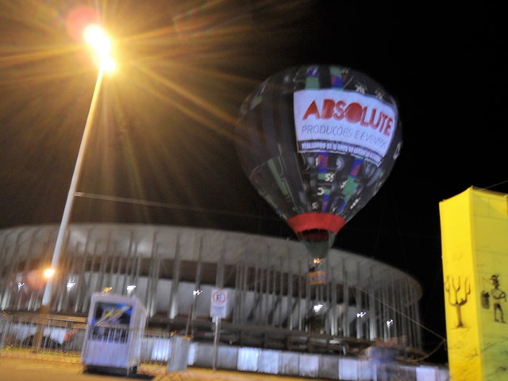
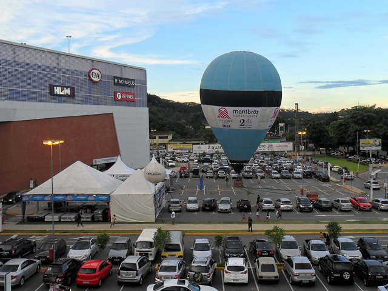
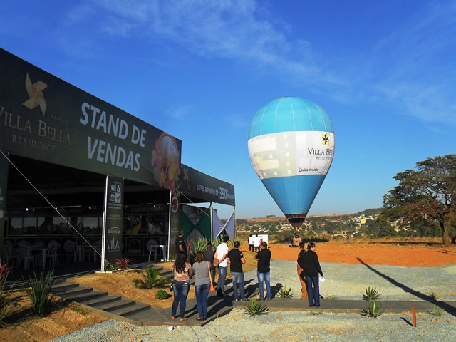
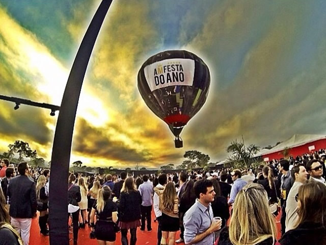
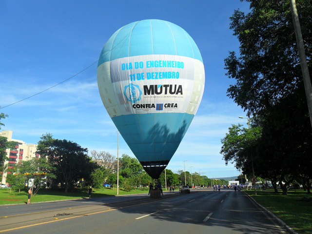
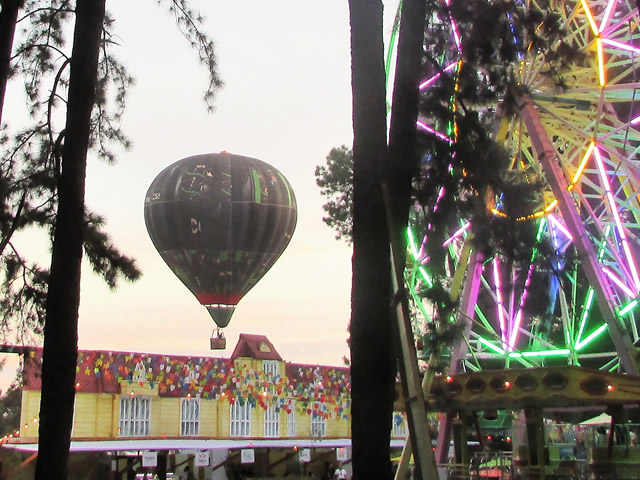
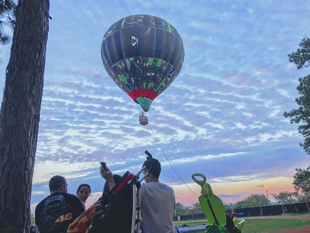
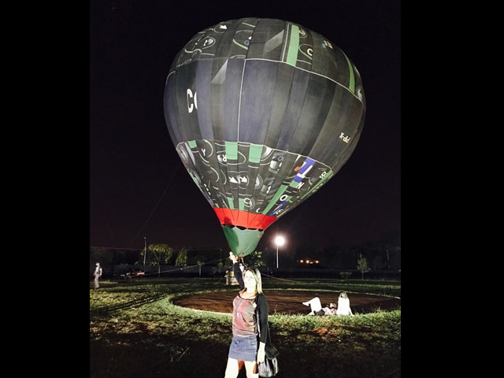
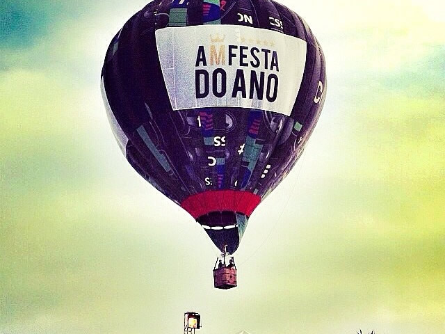
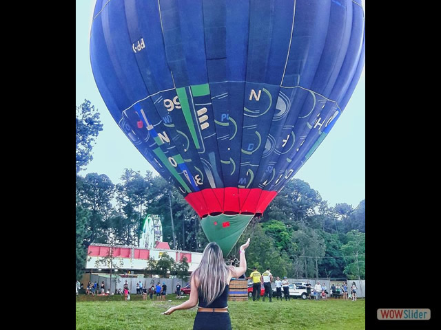
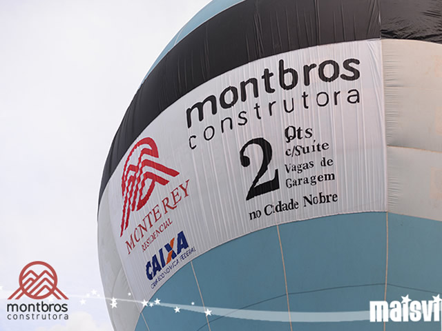
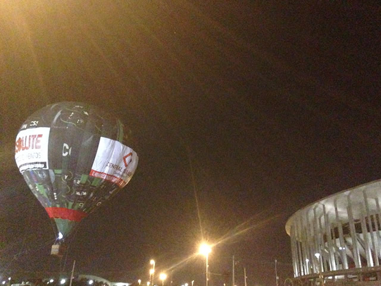
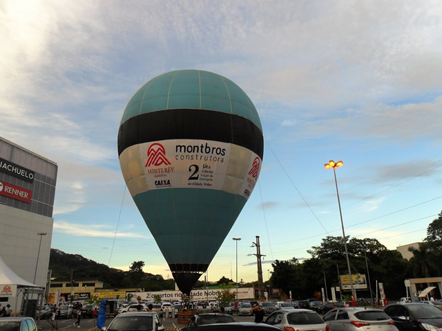
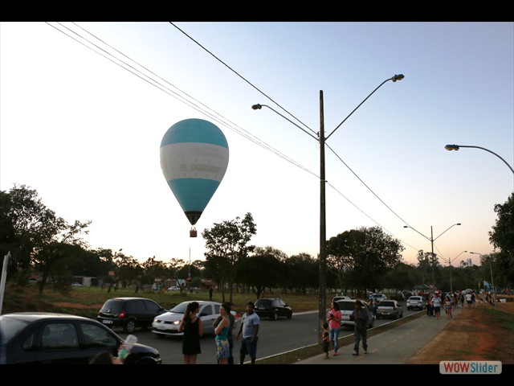
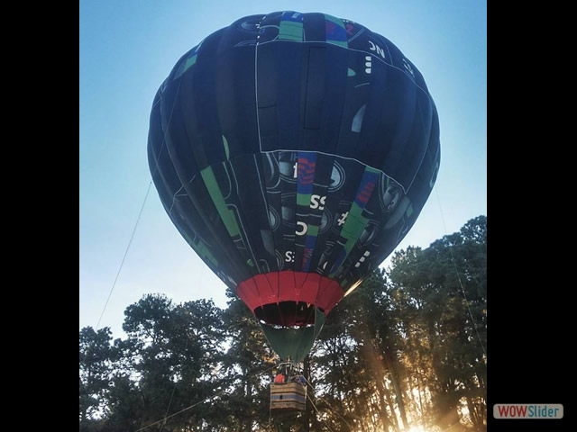
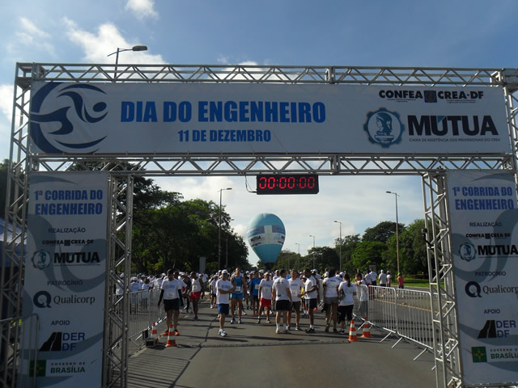
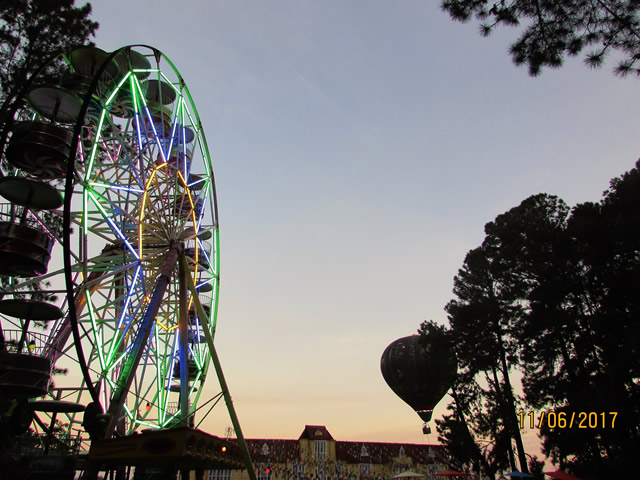
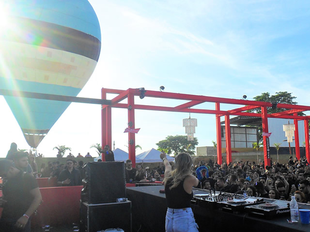
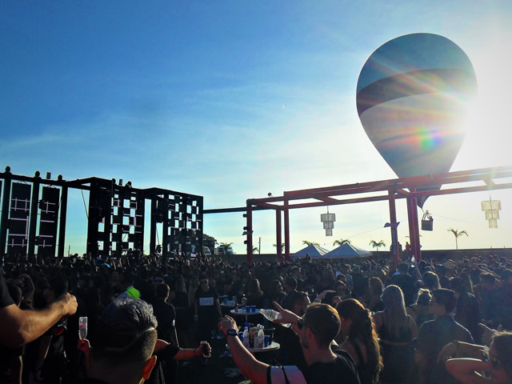
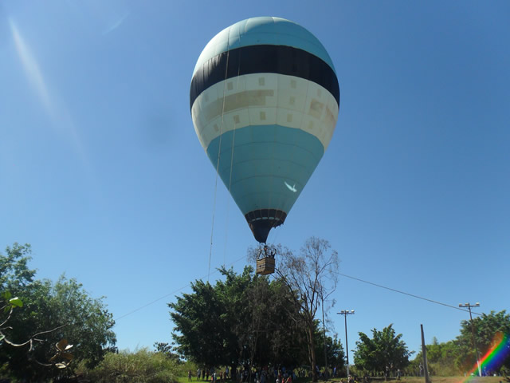
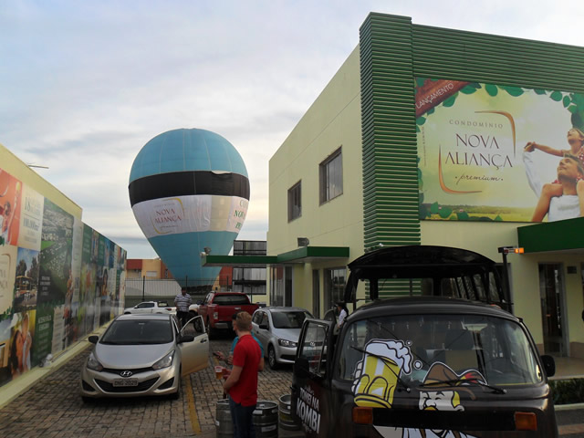
Os balões de ar quente vem se mostrando ao redor do mundo ser um ótimo veículo de mídia, pois eles podem ser levados aos mais variados locais como se fossem um outdoor móvel, porém ele é uma aeronave, que pode se manter estatica no céu, divulgando uma marca e representando seu anunciante. Desta forma o balonismovem ganhando espaço no mercado como uma mídia de impacto oferecendo grande abrangência no menor tempo possível.
Seja qual for o evento, um balão pode ser notado por todas as pessoas presentes, e vai cativar todas as faixas etárias. Os olhos do público estarão sempre voltados ao céu, vizualizando sua empresa, sua marca.
Normalmente os trabalhos realizados em eventos com balão é chamado de voo cativo, onde o balão é fixado com cordas em um determinado local para realizar apresentações ou voos durante o tempo necessário. Pela noite, o show de luzes proporcionado pelo maçarico do balão é fantástico, é o famoso “night glow”.
Vale a pena cativar seus clientes com o balonismo!
Confira nossos serviços...
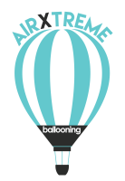
Voo Cativo
No voo cativo o balão fica amarrado por cordas e sobe até 30 metros de altura, em qualquer* lugar escolhido por você, onde nesse período podemos levar até 20 passageiros* por hora, acendendo e descendo para promover sua marca ou ação promocional
Aluguel de Equipamentos
Para equipes profissionais que necessitarem de equipamentos no estado de Goiás ou em Brasília a AirXtreme guarnece um sistema de balão de ar quente completo e equipe de apoio, totalmente a disposição dos amigos balonistas
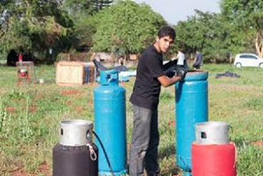
Personalize nosso balão com a arte que você desejar...
A grande jogada no marketing aéreo, é poder associar a sua marca a um balão de ar quente!
Com isso não importa onde for, quem estiver por perto, vai guardar na memória para sempre sua marca no nosso balão, além do fato de que associar sua empresa a uma atividade esportiva e cultural como o balonismo, tras credibilidade e confiança á sua promoção...
Nosso balão possui 3 painéis gigantescos, eles ficam na parte branca do balão. Cada painel possui 10 metros de comprimento por 6 metros de altura! Para utilizar esses painéis nos produzimos faixas, com a medida de 10x6m, onde o cliente escolhe qualquer arte, e a mesma é confeccionada em impressão digital. Instalando os 3 paineis no balão é garantido a visibilidade 360º da arte escolhida e assegurado o encanto de todo público alvo atingido.
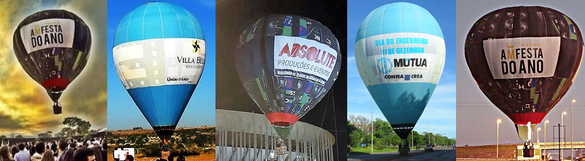
a AirXtreme está nas redes sociais...
marketing aereo, marketing balao, marketing com balao de ar quente, marketing balonismo, propaganda com balao, propaganda com balao de ar quente, propaganda com balonismo, evento com balonismo, evento com balao de ar quente, piloto de balao de ar quente, aluguel de balao de ar quente para festas, aluguel de balao para festas, aluguel, balao, para, de, com, uma, um, marketing visual, estrategia de marketing aereo, estrategia de markeing, voo de balao, balao goiania, balonismo goiania, balonismo anapolis, balonismo goias, balonismo brasil, balonismo esporte, esporte, federacao goiana de balonismo, balao para eventos, aluguel de balao para evento, evento balonismo, promocao, aerea, alto impacto, baloes, aluguel, voos, tag, tags, google, busca, balao, baloes, balonismo, balloon, balloons, ballooning, aluguel, arrendar, locar, evento, marketing, voo, voos livre, amarrado, propaganda, politica, merchandising, balonismo para evento, brasil, sao paulo, torres, boituva, aluguel, evento, confraternizacao de fim de ano, balao, balao, balonismo, balao tripulado, balaoo magico, aluguel de equipamento de balonismo, aluguel de balao, aluguel de balao tripulado em goiania, aluguel de balao em goias, aluguel de balao em brasilia, aluguel de balao de ar quente em goiania, aluguel equipamento de balonismo em goiania, aluguel de balao tripulado goiania, propaganda em balao brasilia, propaganda em balao anapolis, aluguel de balao anapolis, locacao
balao para festas goiania, balao para festas anapolis,aluguel de balonismo, evento de balonismo, balao para festa goiania, balao para festa anapolis, balonismo anapolis, copa anapolis de balonismo, 1 copa anapolis de balonismo, 2 copa anapolis de balonismo, 3 copa anapolis de balonismo, balonismo anapolis, balao para festas, balao para eventos, balao inflaveis, balao inflavel, campeonado de balao, campeonato de balonismo, voo de balao anapolis, voo de balao goiania, voar de balao anapolis, voar de balao goiania, voar de balao brasilia, voar de balao chapada, voar de balao, voar, voo, livre, balao para eventos, evento de balao, balao evento, evento balonismo, competicao balonismo, balao ar quente anapolis, voar de balao anapolis, balao de ar quente evento, balao de ar quente aeromarketing, market, market com balao, market balonismo, balonismo goiania, balonismo anapolis, balonismo goias, eventos com balao, eventos com baloes, eventos com balonismo, eventos de balonismo, evento de balao, balao para evento, balao para eventos, locacao de balao para eventos, organizacao de eventos com balao, aero, marketing, preco, valor, voo de balao, voo balao, preco para voar, preco de balao, preco balonismo, publicidade em baloes, publicidade, inflaveis, inflavel, balao inflavel, balao inflaveis, blinter, cesto, massarico, vime, cilindro, propano, voar em goiania, voar em anapois, voar em brasilia, voar de balao na chapada, voar de balao em goiania, voar de balao em brasilia, voar de balao
tag, tags, google, busca, balao, baloes, balonismo, balloon, balloons, ballooning, aluguel, arrendar, locar, evento, marketing, voo, voos, voo cativo, livre, amarrado, voo amarrado, propaganda politica, merchandising, torres, boituva, balao barato, aluguel evento, balonismo, balao de ar quente, balao magico, aluguel de equipamento de balonismo, aluguel de balao, aluguel de balao tripulado em goiania, alguel de balao em goias, aluguel de balao em brasilia, aluguel balao distrito federal, aluguel balao df, aluguel balonismo tocantins, voar de balao goiania, voar de balao na chapada, balonismo na chapada, balonismo em goiania, balonismo em anapolis, balonismo no brasil, rio de janeiro, sul, rio grande do sul, chapada dos veadeiros, voar de balao na chapada dos veadeiros, propaganda no balao, propaganda com balao, propaganda com balonismo, promocao com balonismo, promocao com balao, quanto custa um balao, balao de ar quente para vender, preco de balao, valor, onde comprar um balao, como comprar um balao, balao pra vender no brasil, balao no brasil, alugar balao, marketing balao, aluguel, voar na chapada, equipe de balonismo, patrocinio balonismo, equipe busca patrocinio, busca patrocinador, necessita patrocinador, equipe de esportes para patrocinar, equipe de balonismo para patrocinar, marketing aereo para patrocinio, voo cativo balao, piloto de balao goinania, servico de balao goiania, locacao de balao goiania, aluguel de balao goiania, aluguel de balao goias, aluguel de balao anapolis, evento com balao goiania, evento com balonismo, aluguel de balao balonismo, balao, balonismo, goiania, voo, goias, cativo, brasilia, marketing, promocao, aluguel, balao, distrito federal, aluguel, balao, df, aluguel balao, centro este, aluguel, balao, tocantins, minas gerais, bahia, airxtreme, arixtreme, arixtrem, airxtrem, air extreme, air xtreme
aluguel de balao de ar quente em goiania, aluguel equipamento de balonismo em goiania, aluguel de balao tripulado goiania, propaganda em balao brasilia, propaganda em balao anapolis, aluguel de balao anapolis, locacao balao de ar quente, voo cativo balao, piloto de balao goinania, servico de balao goiania, locacao de balao goiania, aluguel de balao goiania, aluguel de balao goias, aluguel de balao anapolis, evento com balao goiania, evento com balonismo, aluguel de balao balonismo, balao, balonismo, goiania, voo, goias, cativo, brasilia, marketing, promocao, aluguel, balao, distrito federal, aluguel, balao, df, aluguel balao, centro este, aluguel, balao, tocantins, minas gerais, bahia, airxtreme, arixtreme, arixtrem, airxtrem, air extreme, air xtreme, balao de ar quente evento, balao de ar quente aeromarketing, market, market com balao, market balonismo, balonismo goiania, balonismo anapolis, balonismo goias, eventos com balao, eventos com baloes, eventos com balonismo, eventos de balonismo, evento de balao, balao para evento, balao para eventos, locacao de balao para eventos, organizacao de eventos com balao, aero, marketing, preco, valor, voo de balao, voo balao preco para voar, preco de balao, preco balonismo, publicidade em baloes publicidade, inflaveis, inflavel, balao inflavel, balao inflaveis, blinter, cesto, massarico, vime, cilindro, propano, voar em goiania, voar em anapois, voar em brasilia, voar de balao na chapada, voar de balao em goiania, voar de balao em brasilia, voar de balao
marketing, propaganda, publicidade, marketing aereo, publicidade aerea, festival de balonismo, copa anapolis de balonismo, primeira copa anapolis de balonismo, segunda copa anapolis de balonismo, terceira copa anapolis de balonismo, publicidade em balao de ar quente, locacao balao de ar quente em anapolis, balao de ar quente em anapolis, balonismo anapolis, balonismo goiania, balonismo aparecida de goiania, balonismo brasilia, balonismo na chapada, balonismo chapada dos veadeiros, balonismo goias, balonismo brasil, balonismo centro oeste, onde aluguar um balao, como alugar um balao, voo de balao em anapolis, voar de balao em anapolis, voar de balao em goiania, voar de balao em brasilia, voar de balao na chapada, balonismo, ballooning, tecido acrobatico no balao, tecido, acrobatico, tecido no balao, larissa tecido acrobatico, upside, upside tecido acrobatico, upside balonismo, balonismo ufg, patricinio, equipe bisca patrocinador, patrocinio balonismo anaoplis, patrocinio balonismo goiania, empresa balonismo, emprasa marketing aereo, empresa aluguel de balao, empresa de balao de ar quente, balao de ar quente
balonismo em brasilia, balonismo em anapolis, balonismo em goiania, balao para propaganda, balonismo para propaganda, balonismo para publicidade em brasilia, balonismo para publicidade em goiania, alugar balao em goiania, balao em brasilia, balao em anapolis, propaganda em balao em brasilia, propaganda em balao, marketing em balao, publicidade em balao, balao para publicidade em brasilia, evento de balao, balao para eventos, balao para shows, balao para politicos, balao para politico, balao para colocar faixa, fazer propaganda em balao, fazer propaganda com balao, fazer acao de marketing com balonismo, publicidade em balao de ar quente, publicidade com balonismo, publicidade com balao de voar, passeio de balao goiania, passeio de balao em goiania, passeio de balao brasilia, passeio de balao em brasilia, passeio de balao anapolis, passeio de balao em anapolis, passeio de balao chapada dos veadeiros, passeio de balao na chapada dos veadeiros, passeio de balao goias, passeio de balao em goias,